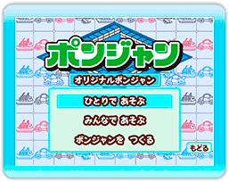
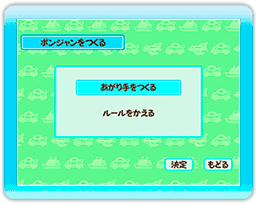
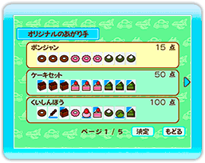
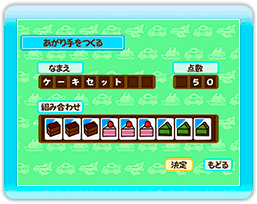

＜ポンジャン作成の流れ＞
１.パイの選択
作成するパイを選んでください。
なお、ここで選んでいるパイが「ひとりであそぶ」と「みんなであそぶ」に使用されます。
２.変更する内容の選択
あがり手をつくる
あがり手の作成を行います。
ルールをかえる
ルールの変更を行います。
変更できる内容はノーマルポンジャンと同じです。
３.あがり手の作成（スロットの選択）
作成したオリジナルの役が表示されます。
最初のスロットには、あらかじめ基本となる役が用意されています。この役を変更したり削除する事はできません。
役を作りたいスロットを十字ボタンで選んで２ボタンで決定してください。
オリジナルの役は、全部で14個作成する事ができます。
４.あがり手の作成（役の設定）
役を作りたいスロットを選択すると「なまえ」
「点数」「組み合わせ」の設定画面が表示されます。
十字ボタンで設定したい項目を選んで、２ボタンで決定してください。
「なまえ」
役の名前を設定します。
ひらがな、かたかな、英数字、記号を使って８文字以内で役の名前を入力してください。
「点数」
役の点数を設定します。
好きな数字を組み合わせて、点数を入力してください。
「組み合わせ」
パイの組み合わせを設定します。
画面に表示されているパイの中から９個のパイを選択して役を作成してください。
ここで作成した役は、ゲーム中でAボタンを押すと確認する事ができます。